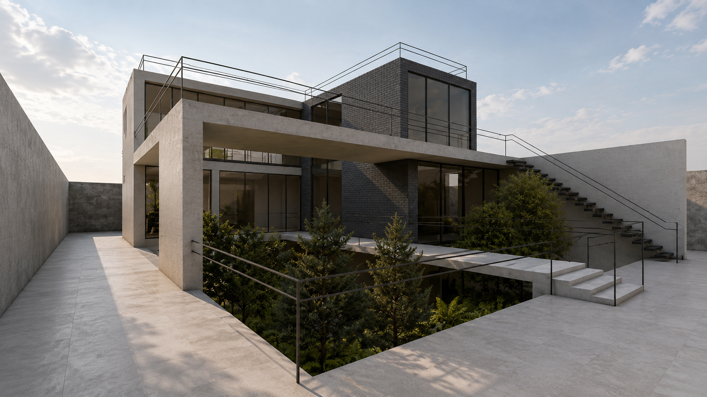
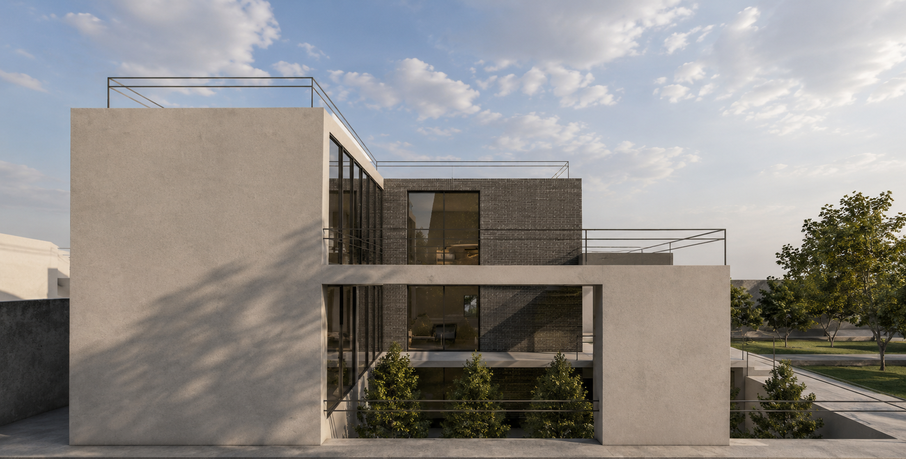
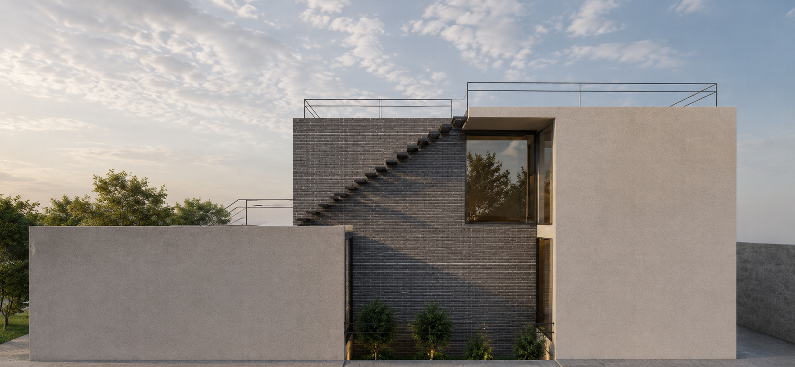
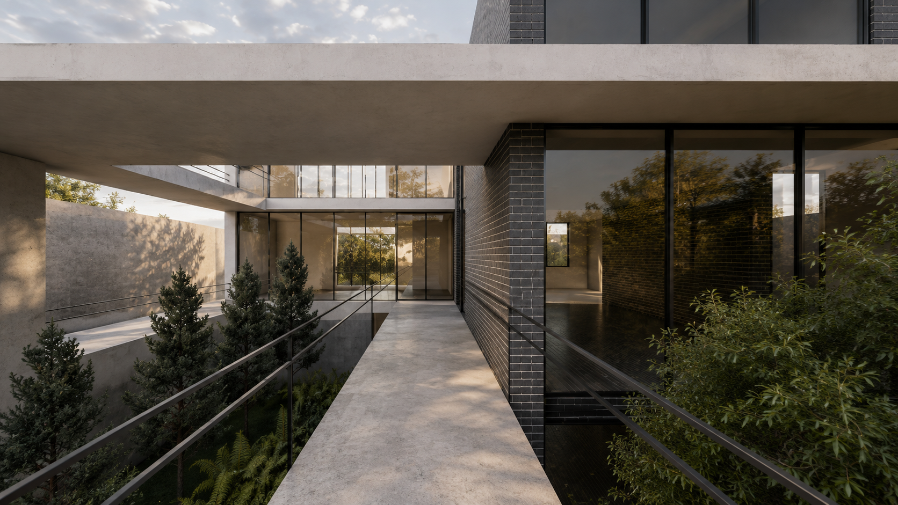
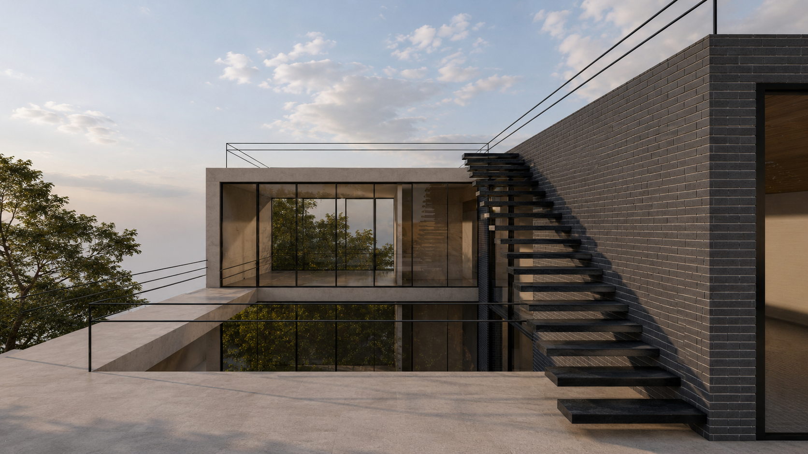
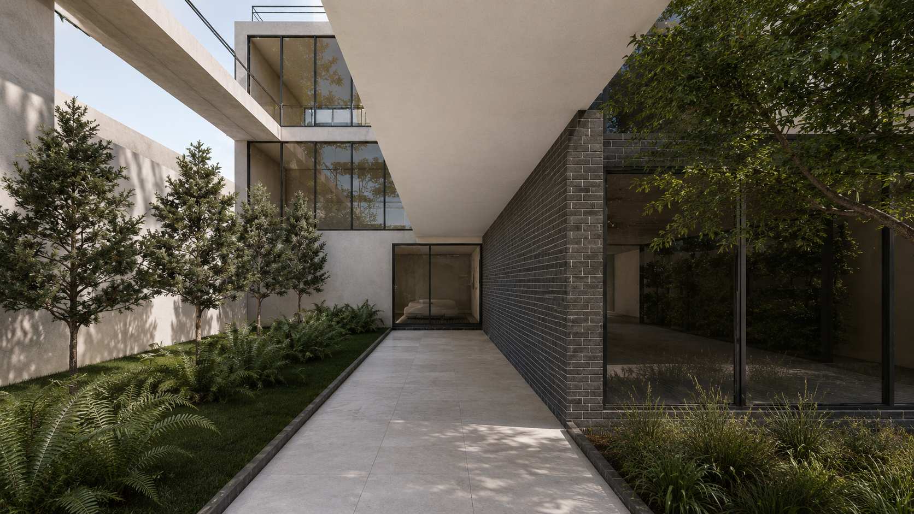
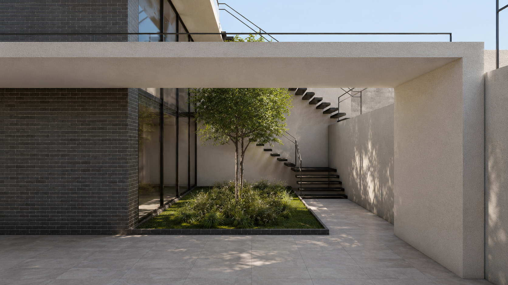

Residential Architecture

Location
Year
Scope
Collaboration
Commissioned by
Bridge Villa is conceived as a contemporary residence where movement becomes an integral part of the architectural experience. Rather than relying on conventional corridors, a series of elevated bridges connects the home's private and social spaces, transforming circulation into moments of openness, light, and framed views. At the heart of the project, a landscaped courtyard introduces nature deep into the building, creating a constant visual dialogue between architecture and the surrounding environment. The composition is defined by the interplay of solid and transparent elements. White concrete volumes provide a calm, sculptural presence, while dark brick anchors the building with warmth and texture. Expansive floor-to-ceiling glazing dissolves the boundary between inside and outside, allowing natural daylight to flood the interiors and reflecting the surrounding greenery throughout the day. The carefully balanced material palette reinforces a timeless architectural language that is both restrained and expressive. Designed around the principles of openness, connection, and simplicity, Bridge Villa offers a sequence of spaces that feel fluid yet intimate. Every bridge, courtyard, and framed view contributes to an environment where architecture, landscape, and everyday life merge into a unified living experience.






